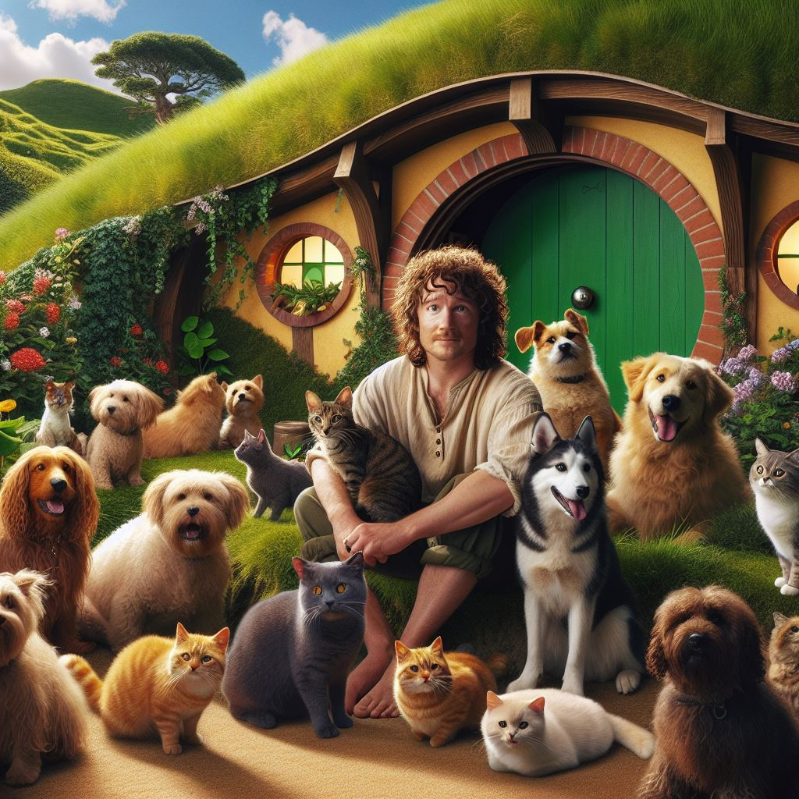
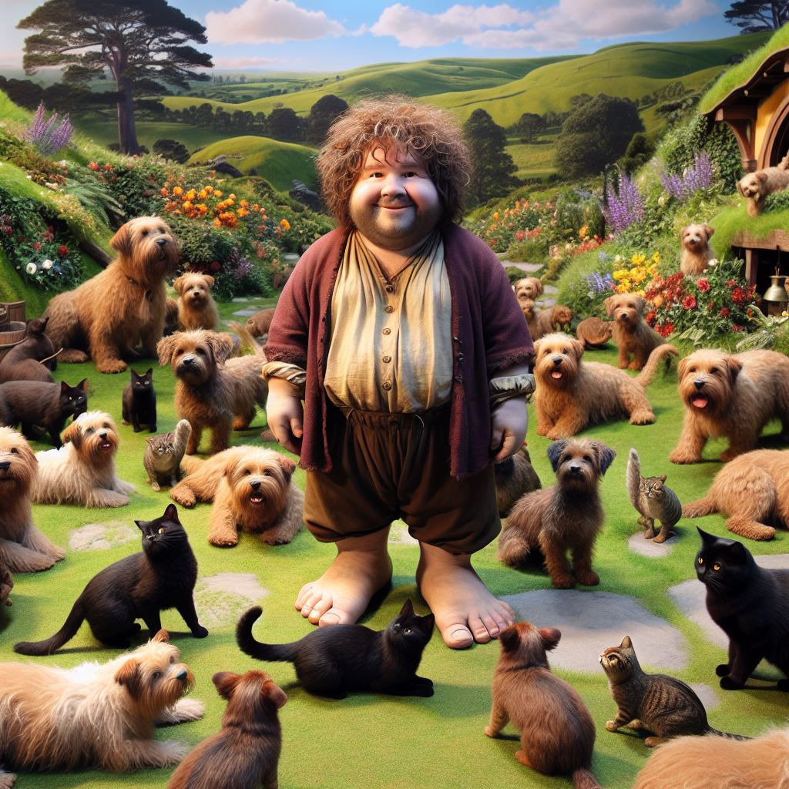
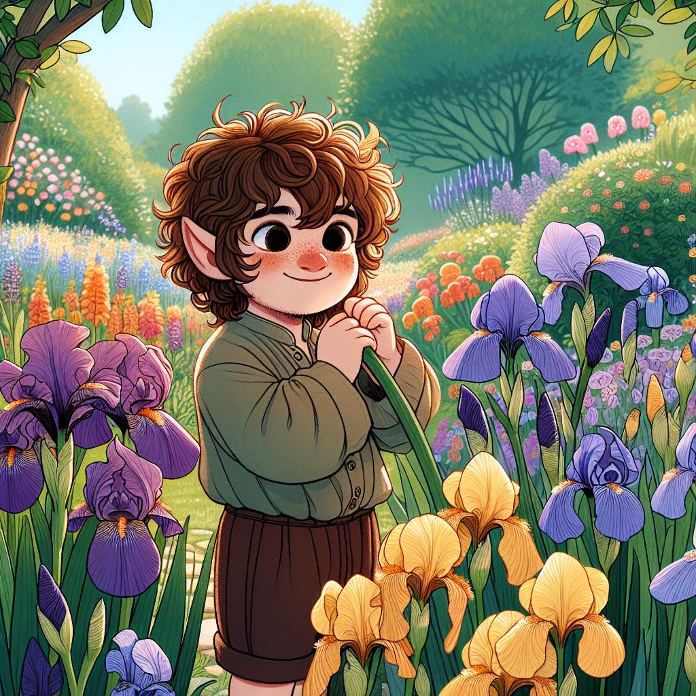

Tolkien & Gen AI
El camino hacia GenAI
Definiciones
IA: "Disciplina científica que se ocupa de crear programas informáticos que ejecutan operaciones comparables a las que realiza la mente humana, como el aprendizaje o el razonamiento lógico" DRAE
Machine Learning: "Campo de estudio que confiere a los ordenadores la capacidad de aprender sin ser programados explícitamente.” Arthur Samuel, 1959
Tipos de aprendizaje


Supervisado
No supervisado
Ejemplos de aprendizaje


AlphaGo
AlphaGo Zero
Limitaciones
Sesgos en los datos
 Explicabilidad

Explicabilidad

Limitaciones
- Gran cantidad de datos
- Sesgos en los datos
- Interpretabilidad
- Especialización
- Requerimientos computacionales
- Mantenimiento y actualización
- Seguridad, privacidad, ...
¿Es la IA "inteligente"?
¿Es la IA "inteligente"?


Test de Turing
Test de Voight-Kampff
Large Language Models
Comportamiento emergente


Hombre ---- Rey
Mujer ---- Reina


Hombre ---- Doctor
Mujer ---- ¿Enfermera?